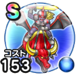

ハデスナイト
災厄の目覚めこころ最大コスト+4スキルの斬撃・体技ダメージ+3%ギラ属性斬撃・体技ダメージ+7%ドルマ属性斬撃・体技ダメージ+5%転び耐性+10%【夜間】ちから+20【夜間】すばやさ+20 / 8.0点
くわしい特徴
【ランク特殊効果】 こころ最大コスト+4スキルの斬撃・体技ダメージ+3%ギラ属性斬撃・体技ダメージ+7%ドルマ属性斬撃・体技ダメージ+5%転び耐性+10%【夜間】ちから+20【夜間】すばやさ+20

災厄の目覚めこころ最大コスト+4スキルの斬撃・体技ダメージ+3%ギラ属性斬撃・体技ダメージ+7%ドルマ属性斬撃・体技ダメージ+5%転び耐性+10%【夜間】ちから+20【夜間】すばやさ+20 / 8.0点
【ランク特殊効果】 こころ最大コスト+4スキルの斬撃・体技ダメージ+3%ギラ属性斬撃・体技ダメージ+7%ドルマ属性斬撃・体技ダメージ+5%転び耐性+10%【夜間】ちから+20【夜間】すばやさ+20